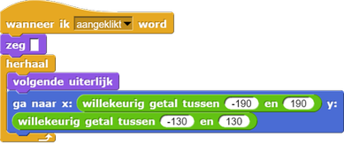

Maak er een spel van
Op deze pagina ga je je game aanpassen zodat het een echt spel wordt. Elke keer als de
speler op Alonzo klikt, zal Alonzo een beetje lichter van kleur worden. Het doel van het spel is om
Alonzo telaten verdwijnen.
-
Om te zorgen dat Alonzo blijft bewegen, heb je een blok nodig dat zegt 'herhaal
dit'. Dat doet dit blok:
Pas nu je Alonzo script aan zodat het blijft lopen.
De geschakelde blokken binnen hetherhaalblok zullen doorlopen worden totdat je op het rode stopteken drukt. Of totdat het script op een andere manier gestopt wordt. - Alonzo beweegt te snel! Gebruik het blok om hem langzamer te laten bewegen. Je kunt de wachttijd groter of kleiner maken als je wilt.
- Het commando past Alonzo's helderheid aan. Probeer verschillende getallen als invoer om te zien wat het effect is.
- Pas nu je script zo aan dat elke keer dat je op Alonzo klikt, hij een beetje lichter wordt.
- Speel je spel een paar keer. Speel met de code om het makkelijker of moeilijker te maken.
Je kunt het spookeffect en de wachttijd gebruiken om het spel aan te passen.
-
Gebruik nog een blok om het
spook-effectmet -5 te veranderen, elke keer dat Alonzo beweegt zonder dat er op hem wordt geklikt.
 Hoe verandert dit het spel?
Hoe verandert dit het spel?